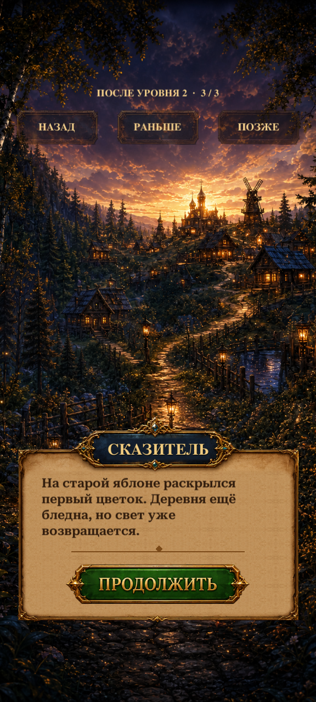

Story recap R2
Actual Unity 6000.5.9f1 capture of the implemented reader. Russian, latest acknowledged scene in this synthetic save, 576 × 1280 with a simulated safe area.

Opened from Profile History. Existing Dialogue artwork and live text; Earlier/Later browse read scenes, Back returns to the same History page. Phone readability and user visual acceptance remain pending.
Verification evidence · Implementation details